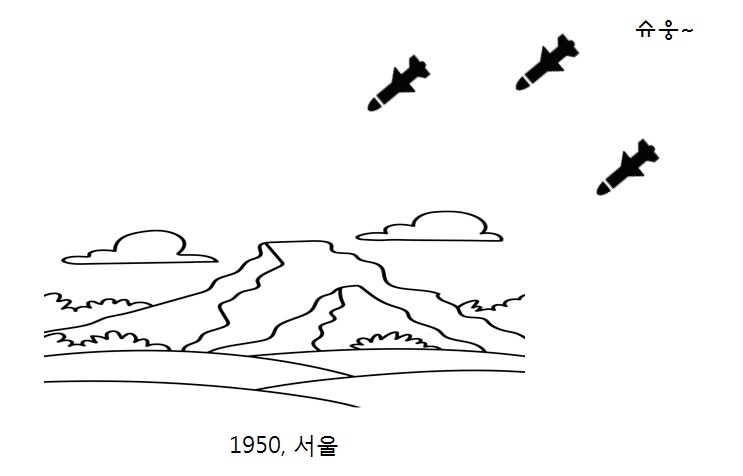
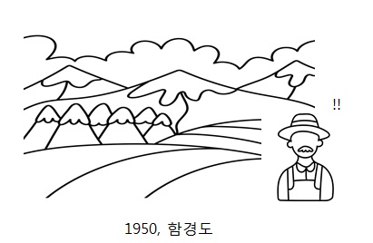
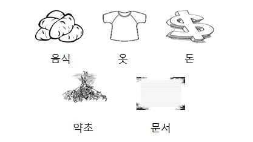

배경
1950년 6월 25일 오전 4시에 조선민주주의인민공화국이 기습적으로
대한민국을 침공하여 발발한 전쟁으로 인해,
부산까지 피난을 시작한 국민들,, 그 전쟁통 속에서 살아나가는 '아무개'들의 성장이야기.
서울에 살던 '아무개A' 는 폭격을 피해서 피난을 하게된다.

1950년 6월 25이 새벽 4시 , '쾅,, 콰광,, ' 잠에서 깬 '아무개A' 평소에 전쟁관련 소식을 들어왔던 터라
직감적으로 전쟁이 시작되었다는 것을 알고, 서둘러 급히 물건을 챙긴다.

다음의 다섯가지중 두개를 챙겨야한다.
각각은 내포하고 있는 필요가 다르며, 생존전략에 따라서, 스토리가 진행
됨에 따라, 역사적 사실에 따라서 영향을 미칠 수 있다.